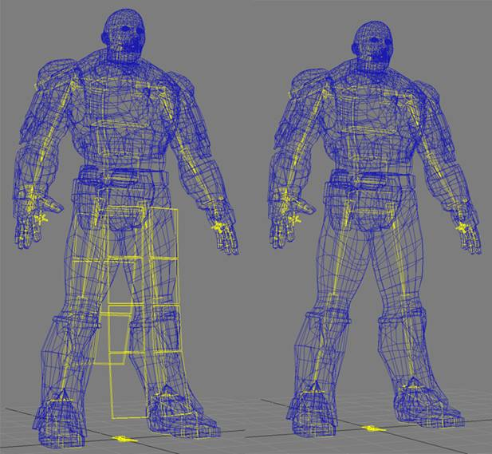
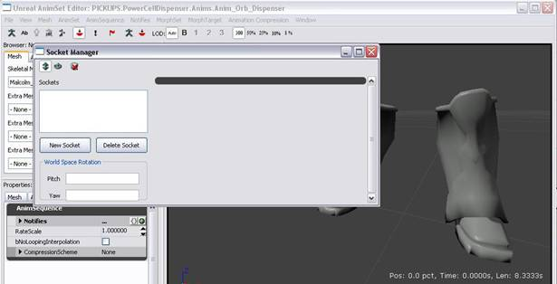

UDN
Search public documentation:
UT3CustomCharactersCH
English Translation
日本語訳
한국어
Interested in the Unreal Engine?
Visit the Unreal Technology site.
Looking for jobs and company info?
Check out the Epic games site.
Questions about support via UDN?
Contact the UDN Staff
日本語訳
한국어
Interested in the Unreal Engine?
Visit the Unreal Technology site.
Looking for jobs and company info?
Check out the Epic games site.
Questions about support via UDN?
Contact the UDN Staff
创建 UT3 自定义角色
文档概要：创建第三代虚幻竞技场游戏的自定义角色的指南。 文档变更记录：由 Paul Jones? 创建；Chris Mielke 和 Aaron Herzog 更新。由 Richard Nalezynski? 进行维护。概述
该文档主要讨论的是 UT3 角色骨架，以及如何将网格物体内容导入到引擎并进行配置，使它可以在游戏中运行。骨架
在 UT3 中使用了 4 种不同的主要骨架：- 人类男性
- 人类女性
- krall
- 损坏
- UT3_Male.max (3D Studio Max 9)
- UT3_Male.max (3D Studio Max 9)
- UT3_Krall.max (3D Studio Max 9)
- UT3_Corrupt.max (3D Studio Max 2009)
Mesh（网格物体）加权为 Skeleton（骨架）
创建一个自定义网格物体时，最好是根据心里构想的骨架雏形创建网格物体。网格物体应该根据所有与骨架已经定义的位置相对应的关节建立模型。对于不遵守这个规则的网格物体，可以旋转骨架关节，使它们可以满足网格物体中关节的要求。游戏中的动画会将骨骼调整恢复到它们需要放置的地方，这样才能正常播放。 虽然可以旋转骨骼，但是决不应该平移或挪动它们，尝试将它们放置在网格物体中关节所在位置。因为动画会定义骨骼平移的位置，所以这样做会在游戏中造成意想不到的结果，还会挤压或拉伸网格物体。例如，如果一个网格物体的腿比骨架定义的长度短，然后移动骨架的腿骨骼来补足短的那部分，那么在游戏中为了与其他角色的腿的长度相一致会将腿拉伸得更长。这样可以保证在游戏中角色设置过程中的所有部分连接正确。组装网格物体的正确方法是，根据需要旋转关节使它们在必要的时候尽量闭合和/或修改网格物体进行组装。使用不同比例创建角色将需要一个新的靠模骨架，而且如果该比例与已经存在的角色差距很大，它们可能还需要拥有它们自己的动画，这些已经超出了本文档的范围。 可以考虑使用 Malcolm 网格物体。他分开进行建模的，这样他可以与角色创建联合使用。将他分开是为了与游戏角色创建部分相匹配。已经可以将这些网格物体部分加权为骨架：- 头
- 手臂
- 垫肩
- 人体躯干
- 大腿
- 靴子
 在 UT3_Male.max 文件中合并骨骼，删除不需要的骨骼，然后对网格加权使其成为骨架。在这种情况下，Malcolm 不需要使用任何布料骨骼，所以可以将它们删除。
在 UT3_Male.max 文件中合并骨骼，删除不需要的骨骼，然后对网格加权使其成为骨架。在这种情况下，Malcolm 不需要使用任何布料骨骼，所以可以将它们删除。

导出
接下来是导出您的角色并将其导入引擎。使用 ActorX 将每个网格物体部分单独导出作为他们自己的骨架网格物体。 在这里现在 ActorX 插件：ActorX Malcolm 的靴子会被作为将网格物体部分导入到引擎中的一个示例。对于其他部分使用相同的流程。 要导出 Malcolm 的靴子，首先加载 ActorX。然后确保 Skin Export（皮肤导出） 设置正确。 所有皮肤类型 设置保证会导出场景中的已加权网格物体。 全选 设置是一种简单的导出方法，每次可以导出一个部分。如果由于某些原因， 全选 无法正常工作或者 ActorX 版本中没有提供此项，那么只需删除您不希望导出的网格物体即可，但是“不要”删除骨架的任何部分。只是要确保在删除任何网格物体之前保存您的场景，这样您才会有一个可以返回的完整版，并且切记不要在删除网格物体后覆盖该文件。
在 ActorX 中，填写 输出文件夹 和 网格物体文件 名称字段，并选择靴子的网格物体，按下 保存网格物体/重新定义姿势 按钮创建一个骨架动画 (.psk) 文件。如果在骨架上存在任何动画，ActorX 会使用时间轴的第一帧（通常是帧 0），作为导出姿势。
所有皮肤类型 设置保证会导出场景中的已加权网格物体。 全选 设置是一种简单的导出方法，每次可以导出一个部分。如果由于某些原因， 全选 无法正常工作或者 ActorX 版本中没有提供此项，那么只需删除您不希望导出的网格物体即可，但是“不要”删除骨架的任何部分。只是要确保在删除任何网格物体之前保存您的场景，这样您才会有一个可以返回的完整版，并且切记不要在删除网格物体后覆盖该文件。
在 ActorX 中，填写 输出文件夹 和 网格物体文件 名称字段，并选择靴子的网格物体，按下 保存网格物体/重新定义姿势 按钮创建一个骨架动画 (.psk) 文件。如果在骨架上存在任何动画，ActorX 会使用时间轴的第一帧（通常是帧 0），作为导出姿势。
导入
打开编辑器，在通用浏览器窗口，进入“文件”->“导入”。浏览至您的导出创建的 .psk 文件，并单击“打开”。 您选择 打开 ，会出现另一个窗口，询问您想要对您的动画文件进行哪些操作。在此窗口中的 包 字段，可以让您导入一个现有的包或创建一个新的包。要创建一个新的包，请键入一个不存在的包的名称。会创建新的包，而且会在您选择 确定 时，将您的网格物体导入到这个包中。要导入到一个现有的包，请键入现有包的名称或从下拉列表中选择它。在此窗口中，您还可以通过 群组 字段在这个包中创建一个群组，同时还可以通过 名称 字段更改网格物体的名称。
您选择 打开 ，会出现另一个窗口，询问您想要对您的动画文件进行哪些操作。在此窗口中的 包 字段，可以让您导入一个现有的包或创建一个新的包。要创建一个新的包，请键入一个不存在的包的名称。会创建新的包，而且会在您选择 确定 时，将您的网格物体导入到这个包中。要导入到一个现有的包，请键入现有包的名称或从下拉列表中选择它。在此窗口中，您还可以通过 群组 字段在这个包中创建一个群组，同时还可以通过 名称 字段更改网格物体的名称。
 只要网格物体导入成功，请将这个包保存在以下目录中：
只要网格物体导入成功，请将这个包保存在以下目录中：
\My Documents\My Games\Unreal Tournament 3\UTGame\Unpublished\CookedPC\CustomChars
向网格物体添加 Sockets（插槽）
插槽是用户在骨架网格物体上定义的点。可以将它们添加到任何骨架网格物体，而在 UT3 中，它们可用于许多地方，包括开始发射粒子的点或装备武器的地方。为了您的角色在游戏中可以正常活动，需要向每个网格物体添加这些点。要添加插槽，请双击您想要添加到通用浏览器窗口中的骨架网格物体。骨架网格物体/动画集编辑窗口将会出现。点击 插槽管理器 图标，或从 网格物体 菜单中选择 插槽编辑器 弹出 插槽管理器 窗口。
通过选择 新建插槽 创建的插槽，选择会装备该插槽的骨骼，然后为插槽创建一个名称。 下面是需要用到的插槽列表：| 网格物体名称 | 插槽名称 | 骨骼名称 |
| 手臂网格物体 | WeaponPoint | b_RightWeapon |
| DualWeaponPoint | b_LeftWeapon | |
| 靴子网格物体 | L_JB | b_LeftAnkle |
| R_JB | b_RightAnkle | |
| 人体躯干网格物体 | HeadShotGoreSocket | b_Neck |
配置网格物体供游戏中使用
最后需要做的是配置自定义角色，使游戏知道您的网格物体的位置，以及如何使用它们。可以通过编辑配置 (.ini) 文件完成进行自定义：\My Documents\My Games\Unreal Tournament 3\UTGame\Config\UTCustomChar.ini要将 Malcolm 的靴子添加到 UT3 角色创建菜单中，需要在配置文件中添加一行代码，表明将要使用另一双靴子。Malcolm 看起来像是 Iron Guard 角色，所以这部分最适合这里。在配置文件中向下滚动，您会发现所有 靴子 所在的位置，然后按照它们所位于的家族（在这个案例中，指的是 ironguard 家族（显示为：IRNM））进一步缩小这个范围。
Parts=(Part=PART_Boots,ObjectName="CH_IronGuard_Male.Mesh.SK_CH_IronG_Male_Boots01",PartID="A",FamilyID="IRNM") Parts=(Part=PART_Boots,ObjectName="CH_IronGuard_Male.Mesh.SK_CH_IronG_Male_Boots02",PartID="B",FamilyID="IRNM") Parts=(Part=PART_Boots,ObjectName="CH_IronGuard_Male.Mesh.SK_CH_IronG_Male_Boots03",PartID="C",FamilyID="IRNM")Objectname 的命名规则：
Package.Group.Subgroup.Mesh （注意，每部分之间的是句点）。例如，如果将新的网格物体命名为“Malcolm_Boots”，并且保存在一个名为“Malcolm”的包中，不带有群组，那么很简单 Objectname 的名称是“Malcolm.Malcolm_Boots”。
Objectname 的命名规则：Package.Group.Subgroup.Mesh（注意，每部分之间的是句点）。例如，如果将新的网格物体命名为“Malcolm_Boots”，并且保存在一个名为“Malcolm”的包中，其中没有群组，那么很简单 Objectname 的名称是“Malcolm.Malcolm_Boots”。
Parts=(Part=PART_Boots,ObjectName="Malcolm.Malcolm_Boots",PartID="D",FamilyID="IRNM")保存配置文件，运行游戏。 现在您新建的部分应该会显示在 UT3 角色创建菜单中。